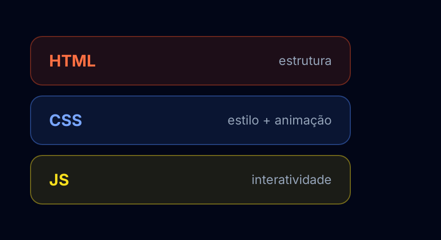
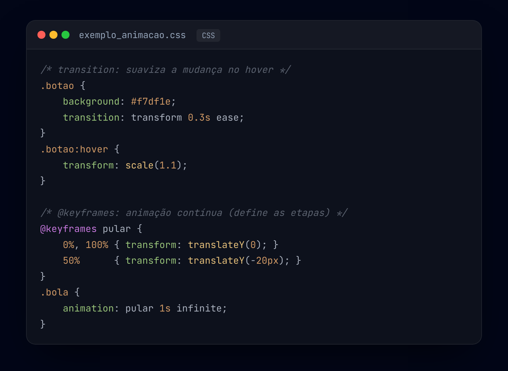

São as três linguagens base do desenvolvimento web. O HTML estrutura o conteúdo, o CSS define a aparência e o JavaScript adiciona interatividade (veja as camadas abaixo).
Os layouts definem como os elementos se organizam na tela. Os dois sistemas mais usados:
Com eles criamos páginas responsivas, que se adaptam a diferentes tamanhos de tela.
transition — suaviza mudanças de estilo ao interagir (ex.: a cor de um botão no hover).@keyframes — animações mais completas, com etapas definidas por from/to ou 0%, 50%, 100%.F12) é o primeiro contato: testar comandos e ver erros.console.log() exibe mensagens e valores durante o desenvolvimento.O console é essencial para testes e depuração — ajuda a entender o código antes de aplicá-lo na página.

transition (suaviza a cor no hover) e a bolinha usa @keyframes (animação contínua). Tudo só com CSS.
transition (suaviza a mudança no
hover) e @keyframes (animação contínua, definindo as etapas).